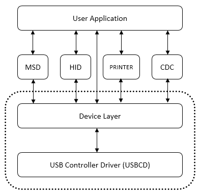
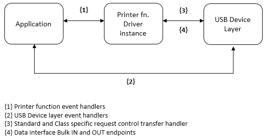

|
MPLAB Harmony USB Stack
|
The Printer Function Driver offers services to a USB Printer Device to communicate with the host by abstracting the USB specification details. It must be used along with the USB Device Layer and USB controller to communicate with the USB Host. Figure 1 shows a block diagram of the MPLAB Harmony USB Architecture and where the Printer Function Driver is placed.

Figure 1: Printer Function Driver
As shown in Figure 1, the USB Controller Driver takes the responsibility of managing the USB peripheral on the device. The USB Device Layer handles the device enumeration, etc. The USB Device layer forwards all USB Printer specific control transfers to the Printer Function Driver. Though the Printer Function Driver layer interprets and handles majority of the control transfers, some requests are sent to application layer through event handlers and well-defined set of API. The application must register an event handler with the Printer Function Driver in the Device Layer Set Configuration Event (USB_DEVICE_PRINTER_EventHandlerSet()). The application should respond to Printer events. Response to Printer event that require control transfer response can be deferred by responding to the event after returning from the event handler. The application interacts directly with the Printer Function Driver to send/receive data through configured Bulk endpoints.
As per the Printer specification, a USB Printer Device support three possible interfaces, but only one can be enabled at any given time. The interfaces are defined as follows:
• Unidirectional Interface: The unidirectional interface supports only the sending of data to the printer via a Bulk OUT endpoint.
• Bi-directional Interface: The bi-directional interface supports sending data to the printer via a Bulk OUT endpoint and receiving status and other information from the printer via a Bulk IN endpoint.
• IEEE 1284.4 compatible Bi-directional Interface: The 1284.4 interface supports sending data to the printer via a Bulk OUT endpoint and receiving status and other information from the printer via a Bulk IN endpoint, just as the bi-directional interface does. The 1284.4 interface additionally specifies that data will be transmitted to and from the device using the 1284.4 protocol.

Figure 2: Printer Function Driver Architecture
Figure 2 shows the architecture of the Printer Function Driver.
The device management on Endpoint 0 is handled by the device library (class specific requests are routed to the Printer Function Driver by the USB Device Layer). An instance of the Printer Function Driver consists of the bulk data interface.
The Printer function library is implemented in usb_device_printer.c file.
This file implements the Printer data handling, the control transfer interpretation and event generation. The application must respond to control transfer related Printer events by directly calling the Device Layer control transfer routines.
|
MPLAB Harmony USB Stack
|